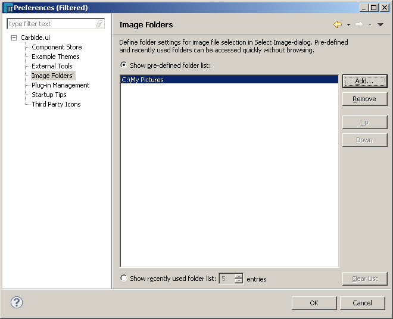

Image folders
The Image folders preferences allow folders that will shown in the Select Image dialog
to
be defined. This allows you to access your image folders without having
to browse for them each time you use Select Image.
The options for the folders list in Select Image are:
- Show pre-defined folder list
— This option uses the
pre-defined folder list in Select Image.
To
create this list use the buttons to
the right of the folders list box:
- Up- This option can be
used when you to move a folder up
- Down- This option allows
you to move the folder down.
- Show recently used folder
lists — This option shows a
recently used folder list Select Image. The Clear List button allows
you to clear this list.

Figure:
Image Folders